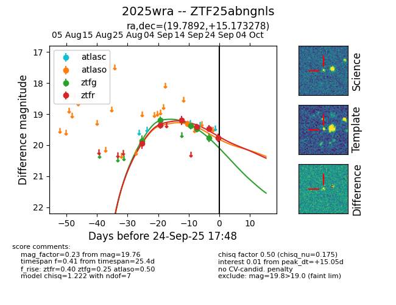
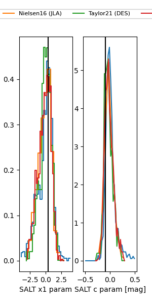

FINK: ZTF25abngnls
Lasair: ZTF25abngnls
ALeRCE: ZTF25abngnls
TNS: 2025wra
YSE: 2025wra
ZTF25abngnls (ztf,fink)
2025wra (tns,yse)
equatorial (ra, dec) = (19.7892,+15.17328)
galactic (l, b) = (132.7940,-47.16699)


last atlaso=19.31, ztfg=19.76, ztfr=19.76
1 atlaso, 5 ztfg, 6 ztfr detections